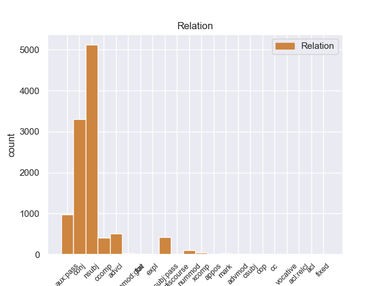
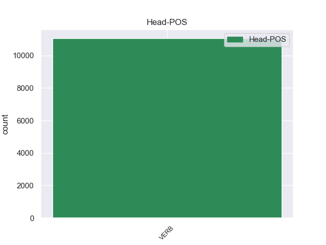
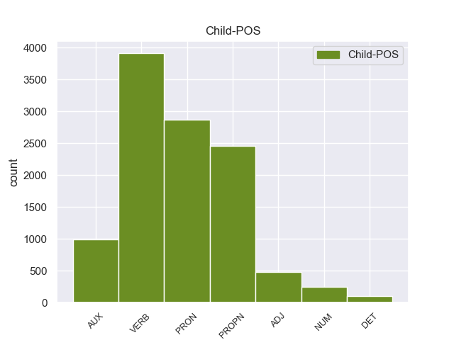

Distribution of features within this leaf



Agreement Rules sorted by frequency.
- When the dependent token is the nominal subject(nsubj) of the head token, and the head token is VERB and the dependent token is PRON.
1 Нельзя _ _ _ _ 0 _ _ _
2 дорогам _ _ _ _ 0 _ _ _
3 зарастать _ _ _ _ 0 _ _ _
4 , _ _ _ _ 0 _ _ _
5 - _ _ _ _ 0 _ _ _
6 сказал сказать VERB _ Aspect=Perf|Gender=Masc|Mood=Ind|Number=Sing|Tense=Past|VerbForm=Fin|Voice=Act 0 _ _ _
7 он он PRON _ Case=Nom|Gender=Masc|Number=Sing|Person=3 6 nsubj 6:nsubj _
8 твердо _ _ _ _ 0 _ _ _
9 . _ _ _ _ 0 _ _ _
1 Он _ _ _ _ 0 _ _ _
2 задумался задуматься VERB _ Aspect=Perf|Gender=Masc|Mood=Ind|Number=Sing|Tense=Past|VerbForm=Fin|Voice=Mid 0 _ _ _
3 , _ _ _ _ 0 _ _ _
4 чуть _ _ _ _ 0 _ _ _
5 перекосив _ _ _ _ 0 _ _ _
6 худенькое _ _ _ _ 0 _ _ _
7 лицо _ _ _ _ 0 _ _ _
8 , _ _ _ _ 0 _ _ _
9 и _ _ _ _ 0 _ _ _
10 даже _ _ _ _ 0 _ _ _
11 перестал перестать VERB _ Aspect=Perf|Gender=Masc|Mood=Ind|Number=Sing|Tense=Past|VerbForm=Fin|Voice=Act 2 conj 2:conj _
12 выдергивать _ _ _ _ 0 _ _ _
13 цветы _ _ _ _ 0 _ _ _
14 и _ _ _ _ 0 _ _ _
15 травинки _ _ _ _ 0 _ _ _
16 , _ _ _ _ 0 _ _ _
17 в _ _ _ _ 0 _ _ _
18 его _ _ _ _ 0 _ _ _
19 коричневых _ _ _ _ 0 _ _ _
20 глазах _ _ _ _ 0 _ _ _
21 появилась _ _ _ _ 0 _ _ _
22 боль _ _ _ _ 0 _ _ _
23 - _ _ _ _ 0 _ _ _
24 так _ _ _ _ 0 _ _ _
25 трудно _ _ _ _ 0 _ _ _
26 вложить _ _ _ _ 0 _ _ _
27 в _ _ _ _ 0 _ _ _
28 чужую _ _ _ _ 0 _ _ _
29 душу _ _ _ _ 0 _ _ _
30 самые _ _ _ _ 0 _ _ _
31 простые _ _ _ _ 0 _ _ _
32 и _ _ _ _ 0 _ _ _
33 очевидные _ _ _ _ 0 _ _ _
34 истины _ _ _ _ 0 _ _ _
35 ! _ _ _ _ 0 _ _ _
1 Одно _ _ _ _ 0 _ _ _
2 красное _ _ _ _ 0 _ _ _
3 перышко _ _ _ _ 0 _ _ _
4 Павлов Павлов PROPN _ Animacy=Anim|Case=Nom|Gender=Masc|Number=Sing 5 nsubj 5:nsubj _
5 взял брать VERB _ Aspect=Perf|Gender=Masc|Mood=Ind|Number=Sing|Tense=Past|VerbForm=Fin|Voice=Act 0 _ _ _
6 с _ _ _ _ 0 _ _ _
7 собой _ _ _ _ 0 _ _ _
8 : _ _ _ _ 0 _ _ _
9 он _ _ _ _ 0 _ _ _
10 уже _ _ _ _ 0 _ _ _
11 научил _ _ _ _ 0 _ _ _
12 близнецов _ _ _ _ 0 _ _ _
13 грубости _ _ _ _ 0 _ _ _
14 недоверия _ _ _ _ 0 _ _ _
15 и _ _ _ _ 0 _ _ _
16 потому _ _ _ _ 0 _ _ _
17 нуждался _ _ _ _ 0 _ _ _
18 в _ _ _ _ 0 _ _ _
19 вещественном _ _ _ _ 0 _ _ _
20 доказательстве _ _ _ _ 0 _ _ _
21 . _ _ _ _ 0 _ _ _
1 Весь _ _ _ _ 0 _ _ _
2 лес _ _ _ _ 0 _ _ _
3 был быть AUX _ Aspect=Imp|Gender=Masc|Mood=Ind|Number=Sing|Tense=Past|VerbForm=Fin|Voice=Act 4 aux:pass 4:aux:pass _
4 населен населить VERB _ Aspect=Perf|Gender=Masc|Number=Sing|Tense=Past|Variant=Short|VerbForm=Part|Voice=Pass 0 _ _ _
5 голосами _ _ _ _ 0 _ _ _
6 прошлого _ _ _ _ 0 _ _ _
7 , _ _ _ _ 0 _ _ _
8 и _ _ _ _ 0 _ _ _
9 я _ _ _ _ 0 _ _ _
10 впервые _ _ _ _ 0 _ _ _
11 с _ _ _ _ 0 _ _ _
12 ошеломляющей _ _ _ _ 0 _ _ _
13 силой _ _ _ _ 0 _ _ _
14 ощутил _ _ _ _ 0 _ _ _
15 , _ _ _ _ 0 _ _ _
16 как _ _ _ _ 0 _ _ _
17 много _ _ _ _ 0 _ _ _
18 пробыл _ _ _ _ 0 _ _ _
19 на _ _ _ _ 0 _ _ _
20 этом _ _ _ _ 0 _ _ _
21 свете _ _ _ _ 0 _ _ _
22 и _ _ _ _ 0 _ _ _
23 что _ _ _ _ 0 _ _ _
24 прожитое _ _ _ _ 0 _ _ _
25 - _ _ _ _ 0 _ _ _
26 это _ _ _ _ 0 _ _ _
27 не _ _ _ _ 0 _ _ _
28 разбег _ _ _ _ 0 _ _ _
29 для _ _ _ _ 0 _ _ _
30 взлета _ _ _ _ 0 _ _ _
31 в _ _ _ _ 0 _ _ _
32 какую-то _ _ _ _ 0 _ _ _
33 будущую _ _ _ _ 0 _ _ _
34 , _ _ _ _ 0 _ _ _
35 настоящую _ _ _ _ 0 _ _ _
36 жизнь _ _ _ _ 0 _ _ _
37 , _ _ _ _ 0 _ _ _
38 что _ _ _ _ 0 _ _ _
39 это _ _ _ _ 0 _ _ _
40 уже _ _ _ _ 0 _ _ _
41 жизнь _ _ _ _ 0 _ _ _
42 , _ _ _ _ 0 _ _ _
43 в _ _ _ _ 0 _ _ _
44 которой _ _ _ _ 0 _ _ _
45 все _ _ _ _ 0 _ _ _
46 связано _ _ _ _ 0 _ _ _
47 : _ _ _ _ 0 _ _ _
48 далекое _ _ _ _ 0 _ _ _
49 прошлое _ _ _ _ 0 _ _ _
49.1 _ _ _ _ _ 0 _ _ _
50 с _ _ _ _ 0 _ _ _
51 настоящим _ _ _ _ 0 _ _ _
52 , _ _ _ _ 0 _ _ _
53 а _ _ _ _ 0 _ _ _
54 если _ _ _ _ 0 _ _ _
55 мне _ _ _ _ 0 _ _ _
56 суждено _ _ _ _ 0 _ _ _
57 будущее _ _ _ _ 0 _ _ _
58 , _ _ _ _ 0 _ _ _
59 то _ _ _ _ 0 _ _ _
60 и _ _ _ _ 0 _ _ _
61 оно _ _ _ _ 0 _ _ _
62 окажется _ _ _ _ 0 _ _ _
63 нерасторжимо _ _ _ _ 0 _ _ _
64 связанным _ _ _ _ 0 _ _ _
65 с _ _ _ _ 0 _ _ _
66 пережитым _ _ _ _ 0 _ _ _
67 ; _ _ _ _ 0 _ _ _
1 Весь _ _ _ _ 0 _ _ _
2 лес _ _ _ _ 0 _ _ _
3 был _ _ _ _ 0 _ _ _
4 населен _ _ _ _ 0 _ _ _
5 голосами _ _ _ _ 0 _ _ _
6 прошлого _ _ _ _ 0 _ _ _
7 , _ _ _ _ 0 _ _ _
8 и _ _ _ _ 0 _ _ _
9 я _ _ _ _ 0 _ _ _
10 впервые _ _ _ _ 0 _ _ _
11 с _ _ _ _ 0 _ _ _
12 ошеломляющей _ _ _ _ 0 _ _ _
13 силой _ _ _ _ 0 _ _ _
14 ощутил _ _ _ _ 0 _ _ _
15 , _ _ _ _ 0 _ _ _
16 как _ _ _ _ 0 _ _ _
17 много _ _ _ _ 0 _ _ _
18 пробыл _ _ _ _ 0 _ _ _
19 на _ _ _ _ 0 _ _ _
20 этом _ _ _ _ 0 _ _ _
21 свете _ _ _ _ 0 _ _ _
22 и _ _ _ _ 0 _ _ _
23 что _ _ _ _ 0 _ _ _
24 прожитое _ _ _ _ 0 _ _ _
25 - _ _ _ _ 0 _ _ _
26 это _ _ _ _ 0 _ _ _
27 не _ _ _ _ 0 _ _ _
28 разбег _ _ _ _ 0 _ _ _
29 для _ _ _ _ 0 _ _ _
30 взлета _ _ _ _ 0 _ _ _
31 в _ _ _ _ 0 _ _ _
32 какую-то _ _ _ _ 0 _ _ _
33 будущую _ _ _ _ 0 _ _ _
34 , _ _ _ _ 0 _ _ _
35 настоящую _ _ _ _ 0 _ _ _
36 жизнь _ _ _ _ 0 _ _ _
37 , _ _ _ _ 0 _ _ _
38 что _ _ _ _ 0 _ _ _
39 это _ _ _ _ 0 _ _ _
40 уже _ _ _ _ 0 _ _ _
41 жизнь _ _ _ _ 0 _ _ _
42 , _ _ _ _ 0 _ _ _
43 в _ _ _ _ 0 _ _ _
44 которой _ _ _ _ 0 _ _ _
45 все все PRON _ Animacy=Inan|Case=Nom|Gender=Neut|Number=Sing 46 nsubj:pass 46:nsubj:pass _
46 связано связать VERB _ Aspect=Perf|Gender=Neut|Number=Sing|Tense=Past|Variant=Short|VerbForm=Part|Voice=Pass 0 _ _ _
47 : _ _ _ _ 0 _ _ _
48 далекое _ _ _ _ 0 _ _ _
49 прошлое _ _ _ _ 0 _ _ _
49.1 _ _ _ _ _ 0 _ _ _
50 с _ _ _ _ 0 _ _ _
51 настоящим _ _ _ _ 0 _ _ _
52 , _ _ _ _ 0 _ _ _
53 а _ _ _ _ 0 _ _ _
54 если _ _ _ _ 0 _ _ _
55 мне _ _ _ _ 0 _ _ _
56 суждено _ _ _ _ 0 _ _ _
57 будущее _ _ _ _ 0 _ _ _
58 , _ _ _ _ 0 _ _ _
59 то _ _ _ _ 0 _ _ _
60 и _ _ _ _ 0 _ _ _
61 оно _ _ _ _ 0 _ _ _
62 окажется _ _ _ _ 0 _ _ _
63 нерасторжимо _ _ _ _ 0 _ _ _
64 связанным _ _ _ _ 0 _ _ _
65 с _ _ _ _ 0 _ _ _
66 пережитым _ _ _ _ 0 _ _ _
67 ; _ _ _ _ 0 _ _ _
1 Я _ _ _ _ 0 _ _ _
2 изрезал изрезывать VERB _ Aspect=Perf|Gender=Masc|Mood=Ind|Number=Sing|Tense=Past|VerbForm=Fin|Voice=Act 0 _ _ _
3 ладони _ _ _ _ 0 _ _ _
4 , _ _ _ _ 0 _ _ _
5 пока _ _ _ _ 0 _ _ _
6 , _ _ _ _ 0 _ _ _
7 наконец _ _ _ _ 0 _ _ _
8 , _ _ _ _ 0 _ _ _
9 выдрал выдрать VERB _ Aspect=Perf|Gender=Masc|Mood=Ind|Number=Sing|Tense=Past|VerbForm=Fin|Voice=Act 2 advcl 2:advcl _
10 его _ _ _ _ 0 _ _ _
11 из _ _ _ _ 0 _ _ _
12 земли _ _ _ _ 0 _ _ _
13 . _ _ _ _ 0 _ _ _
1 Радостно _ _ _ _ 0 _ _ _
2 - _ _ _ _ 0 _ _ _
3 тревожное _ _ _ _ 0 _ _ _
4 чувство _ _ _ _ 0 _ _ _
5 владело _ _ _ _ 0 _ _ _
6 мною _ _ _ _ 0 _ _ _
7 : _ _ _ _ 0 _ _ _
8 я _ _ _ _ 0 _ _ _
9 знал знать VERB _ Aspect=Imp|Gender=Masc|Mood=Ind|Number=Sing|Tense=Past|VerbForm=Fin|Voice=Act 0 _ _ _
10 , _ _ _ _ 0 _ _ _
11 что _ _ _ _ 0 _ _ _
12 ушел уйти VERB _ Aspect=Perf|Gender=Masc|Mood=Ind|Number=Sing|Tense=Past|VerbForm=Fin|Voice=Act 9 ccomp 9:ccomp _
13 не _ _ _ _ 0 _ _ _
14 так _ _ _ _ 0 _ _ _
15 уж _ _ _ _ 0 _ _ _
16 далеко _ _ _ _ 0 _ _ _
17 и _ _ _ _ 0 _ _ _
18 все _ _ _ _ 0 _ _ _
19 же _ _ _ _ 0 _ _ _
20 куда _ _ _ _ 0 _ _ _
21 сильнее _ _ _ _ 0 _ _ _
22 оторвался _ _ _ _ 0 _ _ _
23 от _ _ _ _ 0 _ _ _
24 дома _ _ _ _ 0 _ _ _
25 , _ _ _ _ 0 _ _ _
26 чем _ _ _ _ 0 _ _ _
27 если _ _ _ _ 0 _ _ _
28 бы _ _ _ _ 0 _ _ _
29 забрел _ _ _ _ 0 _ _ _
30 в _ _ _ _ 0 _ _ _
31 последнюю _ _ _ _ 0 _ _ _
32 даль _ _ _ _ 0 _ _ _
33 по _ _ _ _ 0 _ _ _
34 знакомой _ _ _ _ 0 _ _ _
35 , _ _ _ _ 0 _ _ _
36 проторенной _ _ _ _ 0 _ _ _
37 тропке _ _ _ _ 0 _ _ _
38 . _ _ _ _ 0 _ _ _
1 Я _ _ _ _ 0 _ _ _
2 вытряхнул _ _ _ _ 0 _ _ _
3 грибы _ _ _ _ 0 _ _ _
4 из _ _ _ _ 0 _ _ _
5 рубашки _ _ _ _ 0 _ _ _
6 и _ _ _ _ 0 _ _ _
7 надел _ _ _ _ 0 _ _ _
8 ее _ _ _ _ 0 _ _ _
9 на _ _ _ _ 0 _ _ _
10 себя _ _ _ _ 0 _ _ _
11 , _ _ _ _ 0 _ _ _
12 безнадежно _ _ _ _ 0 _ _ _
13 замаранную замарать VERB _ Aspect=Perf|Case=Acc|Gender=Fem|Number=Sing|Tense=Past|VerbForm=Part|Voice=Pass 0 _ _ _
14 , _ _ _ _ 0 _ _ _
15 приятно _ _ _ _ 0 _ _ _
16 и _ _ _ _ 0 _ _ _
17 остро _ _ _ _ 0 _ _ _
18 пахучую пахучий ADJ _ Case=Acc|Degree=Pos|Gender=Fem|Number=Sing 13 conj 13:conj _
19 от _ _ _ _ 0 _ _ _
20 свинушек _ _ _ _ 0 _ _ _
21 , _ _ _ _ 0 _ _ _
22 и _ _ _ _ 0 _ _ _
23 двинулся _ _ _ _ 0 _ _ _
24 дальше _ _ _ _ 0 _ _ _
25 . _ _ _ _ 0 _ _ _
1 - _ _ _ _ 0 _ _ _
2 А _ _ _ _ 0 _ _ _
3 долетит _ _ _ _ 0 _ _ _
4 она _ _ _ _ 0 _ _ _
5 ? _ _ _ _ 0 _ _ _
6 - _ _ _ _ 0 _ _ _
7 задумчиво _ _ _ _ 0 _ _ _
8 спросил спросить VERB _ Aspect=Perf|Gender=Masc|Mood=Ind|Number=Sing|Tense=Past|VerbForm=Fin|Voice=Act 0 _ _ _
9 младший младший ADJ _ Case=Nom|Degree=Pos|Gender=Masc|Number=Sing 8 nsubj 8:nsubj SpaceAfter=No
10 . _ _ _ _ 0 _ _ _
1 " _ _ _ _ 0 _ _ _
2 Просто _ _ _ _ 0 _ _ _
3 отдыхали _ _ _ _ 0 _ _ _
4 " _ _ _ _ 0 _ _ _
5 , _ _ _ _ 0 _ _ _
6 - _ _ _ _ 0 _ _ _
7 объяснил объяснить VERB _ Aspect=Perf|Gender=Masc|Mood=Ind|Number=Sing|Tense=Past|VerbForm=Fin|Voice=Act 0 _ _ _
8 репортеру _ _ _ _ 0 _ _ _
9 случившееся _ _ _ _ 0 _ _ _
10 один один NUM _ Case=Nom|Gender=Masc 7 nsubj 7:nsubj _
11 из _ _ _ _ 0 _ _ _
12 тех _ _ _ _ 0 _ _ _
13 , _ _ _ _ 0 _ _ _
14 что _ _ _ _ 0 _ _ _
15 остался _ _ _ _ 0 _ _ _
16 в _ _ _ _ 0 _ _ _
17 живых _ _ _ _ 0 _ _ _
18 . _ _ _ _ 0 _ _ _
1 Этот _ _ _ _ 0 _ _ _
2 Договор Договор PROPN _ Animacy=Inan|Case=Nom|Gender=Masc|Number=Sing 4 nsubj:pass 4:nsubj:pass _
3 был _ _ _ _ 0 _ _ _
4 подписан подписать VERB _ Aspect=Perf|Gender=Masc|Number=Sing|Tense=Past|Variant=Short|VerbForm=Part|Voice=Pass 0 _ _ _
5 в _ _ _ _ 0 _ _ _
6 1922 _ _ _ _ 0 _ _ _
7 году _ _ _ _ 0 _ _ _
8 РСФСР _ _ _ _ 0 _ _ _
9 , _ _ _ _ 0 _ _ _
10 Украинской _ _ _ _ 0 _ _ _
11 ССР _ _ _ _ 0 _ _ _
12 , _ _ _ _ 0 _ _ _
13 Белорусской _ _ _ _ 0 _ _ _
14 ССР _ _ _ _ 0 _ _ _
15 , _ _ _ _ 0 _ _ _
16 и _ _ _ _ 0 _ _ _
17 Закавказской _ _ _ _ 0 _ _ _
18 Социалистической _ _ _ _ 0 _ _ _
19 Федеративной _ _ _ _ 0 _ _ _
20 Советской _ _ _ _ 0 _ _ _
21 Республикой _ _ _ _ 0 _ _ _
22 , _ _ _ _ 0 _ _ _
23 которая _ _ _ _ 0 _ _ _
24 объединяла _ _ _ _ 0 _ _ _
25 в _ _ _ _ 0 _ _ _
26 своем _ _ _ _ 0 _ _ _
27 составе _ _ _ _ 0 _ _ _
28 Грузию _ _ _ _ 0 _ _ _
29 , _ _ _ _ 0 _ _ _
30 Армению _ _ _ _ 0 _ _ _
31 и _ _ _ _ 0 _ _ _
32 Азербайджан _ _ _ _ 0 _ _ _
33 . _ _ _ _ 0 _ _ _
1 Старший _ _ _ _ 0 _ _ _
2 из _ _ _ _ 0 _ _ _
3 близнецов _ _ _ _ 0 _ _ _
4 осторожно _ _ _ _ 0 _ _ _
5 взял _ _ _ _ 0 _ _ _
6 перышко _ _ _ _ 0 _ _ _
7 , _ _ _ _ 0 _ _ _
8 провел _ _ _ _ 0 _ _ _
9 им _ _ _ _ 0 _ _ _
10 по _ _ _ _ 0 _ _ _
11 щеке _ _ _ _ 0 _ _ _
12 и _ _ _ _ 0 _ _ _
13 передал _ _ _ _ 0 _ _ _
14 брату _ _ _ _ 0 _ _ _
15 , _ _ _ _ 0 _ _ _
16 тот тот DET _ Case=Nom|Gender=Masc|Number=Sing 17 nsubj 17:nsubj _
17 повторил повторить VERB _ Aspect=Perf|Gender=Masc|Mood=Ind|Number=Sing|Tense=Past|VerbForm=Fin|Voice=Act 0 _ _ _
18 его _ _ _ _ 0 _ _ _
19 жест _ _ _ _ 0 _ _ _
20 . _ _ _ _ 0 _ _ _
1 Одним один NUM _ Case=Ins|Gender=Neut 6 nummod 6:nummod _
2 из _ _ _ _ 0 _ _ _
3 следствий _ _ _ _ 0 _ _ _
4 выполненных _ _ _ _ 0 _ _ _
5 исследований _ _ _ _ 0 _ _ _
6 стало стать VERB _ Aspect=Perf|Gender=Neut|Mood=Ind|Number=Sing|Tense=Past|VerbForm=Fin|Voice=Mid 0 _ _ _
7 внедрение _ _ _ _ 0 _ _ _
8 взрывных _ _ _ _ 0 _ _ _
9 процессов _ _ _ _ 0 _ _ _
10 в _ _ _ _ 0 _ _ _
11 горнодобывающей _ _ _ _ 0 _ _ _
12 , _ _ _ _ 0 _ _ _
13 металлообрабатывающей _ _ _ _ 0 _ _ _
14 и _ _ _ _ 0 _ _ _
15 других _ _ _ _ 0 _ _ _
16 отраслях _ _ _ _ 0 _ _ _
17 промышленности _ _ _ _ 0 _ _ _
18 . _ _ _ _ 0 _ _ _
1 Весь _ _ _ _ 0 _ _ _
2 лес _ _ _ _ 0 _ _ _
3 был _ _ _ _ 0 _ _ _
4 населен _ _ _ _ 0 _ _ _
5 голосами _ _ _ _ 0 _ _ _
6 прошлого _ _ _ _ 0 _ _ _
7 , _ _ _ _ 0 _ _ _
8 и _ _ _ _ 0 _ _ _
9 я _ _ _ _ 0 _ _ _
10 впервые _ _ _ _ 0 _ _ _
11 с _ _ _ _ 0 _ _ _
12 ошеломляющей _ _ _ _ 0 _ _ _
13 силой _ _ _ _ 0 _ _ _
14 ощутил _ _ _ _ 0 _ _ _
15 , _ _ _ _ 0 _ _ _
16 как _ _ _ _ 0 _ _ _
17 много _ _ _ _ 0 _ _ _
18 пробыл _ _ _ _ 0 _ _ _
19 на _ _ _ _ 0 _ _ _
20 этом _ _ _ _ 0 _ _ _
21 свете _ _ _ _ 0 _ _ _
22 и _ _ _ _ 0 _ _ _
23 что _ _ _ _ 0 _ _ _
24 прожитое _ _ _ _ 0 _ _ _
25 - _ _ _ _ 0 _ _ _
26 это _ _ _ _ 0 _ _ _
27 не _ _ _ _ 0 _ _ _
28 разбег _ _ _ _ 0 _ _ _
29 для _ _ _ _ 0 _ _ _
30 взлета _ _ _ _ 0 _ _ _
31 в _ _ _ _ 0 _ _ _
32 какую-то _ _ _ _ 0 _ _ _
33 будущую _ _ _ _ 0 _ _ _
34 , _ _ _ _ 0 _ _ _
35 настоящую _ _ _ _ 0 _ _ _
36 жизнь _ _ _ _ 0 _ _ _
37 , _ _ _ _ 0 _ _ _
38 что _ _ _ _ 0 _ _ _
39 это _ _ _ _ 0 _ _ _
40 уже _ _ _ _ 0 _ _ _
41 жизнь _ _ _ _ 0 _ _ _
42 , _ _ _ _ 0 _ _ _
43 в _ _ _ _ 0 _ _ _
44 которой _ _ _ _ 0 _ _ _
45 все _ _ _ _ 0 _ _ _
46 связано _ _ _ _ 0 _ _ _
47 : _ _ _ _ 0 _ _ _
48 далекое _ _ _ _ 0 _ _ _
49 прошлое _ _ _ _ 0 _ _ _
49.1 _ _ _ _ _ 0 _ _ _
50 с _ _ _ _ 0 _ _ _
51 настоящим _ _ _ _ 0 _ _ _
52 , _ _ _ _ 0 _ _ _
53 а _ _ _ _ 0 _ _ _
54 если _ _ _ _ 0 _ _ _
55 мне _ _ _ _ 0 _ _ _
56 суждено _ _ _ _ 0 _ _ _
57 будущее _ _ _ _ 0 _ _ _
58 , _ _ _ _ 0 _ _ _
59 то _ _ _ _ 0 _ _ _
60 и _ _ _ _ 0 _ _ _
61 оно _ _ _ _ 0 _ _ _
62 окажется _ _ _ _ 0 _ _ _
63 нерасторжимо _ _ _ _ 0 _ _ _
64 связанным связать VERB _ Aspect=Perf|Case=Ins|Gender=Neut|Number=Sing|Tense=Past|VerbForm=Part|Voice=Pass 0 _ _ _
65 с _ _ _ _ 0 _ _ _
66 пережитым пережить VERB _ Aspect=Perf|Case=Ins|Gender=Neut|Number=Sing|Tense=Past|VerbForm=Part|Voice=Pass 64 xcomp 64:xcomp SpaceAfter=No
67 ; _ _ _ _ 0 _ _ _
1 Второй _ _ _ _ 0 _ _ _
2 секретарь _ _ _ _ 0 _ _ _
3 обкома _ _ _ _ 0 _ _ _
4 недавно _ _ _ _ 0 _ _ _
5 сказал сказать VERB _ Aspect=Perf|Gender=Masc|Mood=Ind|Number=Sing|Tense=Past|VerbForm=Fin|Voice=Act 0 _ _ _
6 как _ _ _ _ 0 _ _ _
7 о _ _ _ _ 0 _ _ _
8 большом _ _ _ _ 0 _ _ _
9 завоевании _ _ _ _ 0 _ _ _
10 , _ _ _ _ 0 _ _ _
11 что _ _ _ _ 0 _ _ _
12 он _ _ _ _ 0 _ _ _
13 в _ _ _ _ 0 _ _ _
14 последнее _ _ _ _ 0 _ _ _
15 время _ _ _ _ 0 _ _ _
16 вхож вхожий ADJ _ Degree=Pos|Gender=Masc|Number=Sing|Variant=Short 5 ccomp 5:ccomp _
17 к _ _ _ _ 0 _ _ _
18 первому _ _ _ _ 0 _ _ _
19 секретарю _ _ _ _ 0 _ _ _
20 без _ _ _ _ 0 _ _ _
21 звонка _ _ _ _ 0 _ _ _
22 , _ _ _ _ 0 _ _ _
23 а _ _ _ _ 0 _ _ _
24 остальные _ _ _ _ 0 _ _ _
25 ходят _ _ _ _ 0 _ _ _
26 к _ _ _ _ 0 _ _ _
27 нему _ _ _ _ 0 _ _ _
28 только _ _ _ _ 0 _ _ _
29 по _ _ _ _ 0 _ _ _
30 вызову _ _ _ _ 0 _ _ _
31 . _ _ _ _ 0 _ _ _
1 Главная главный ADJ _ Case=Nom|Degree=Pos|Gender=Fem|Number=Sing 4 nsubj:pass 4:nsubj:pass _
2 из _ _ _ _ 0 _ _ _
3 задач _ _ _ _ 0 _ _ _
4 связана связать VERB _ Aspect=Perf|Gender=Fem|Number=Sing|Tense=Past|Variant=Short|VerbForm=Part|Voice=Pass 0 _ _ _
5 с _ _ _ _ 0 _ _ _
6 тем _ _ _ _ 0 _ _ _
7 , _ _ _ _ 0 _ _ _
8 что _ _ _ _ 0 _ _ _
9 получение _ _ _ _ 0 _ _ _
10 легких _ _ _ _ 0 _ _ _
11 металлов _ _ _ _ 0 _ _ _
12 требует _ _ _ _ 0 _ _ _
13 большого _ _ _ _ 0 _ _ _
14 количества _ _ _ _ 0 _ _ _
15 энергии _ _ _ _ 0 _ _ _
16 . _ _ _ _ 0 _ _ _
1 В _ _ _ _ 0 _ _ _
2 свое _ _ _ _ 0 _ _ _
3 время _ _ _ _ 0 _ _ _
4 В. _ _ _ _ 0 _ _ _
5 И. _ _ _ _ 0 _ _ _
6 Ленин _ _ _ _ 0 _ _ _
7 ядовито _ _ _ _ 0 _ _ _
8 высмеял _ _ _ _ 0 _ _ _
9 пустопорожние _ _ _ _ 0 _ _ _
10 словопрения _ _ _ _ 0 _ _ _
11 депутатов _ _ _ _ 0 _ _ _
12 III _ _ _ _ 0 _ _ _
13 Думы _ _ _ _ 0 _ _ _
14 : _ _ _ _ 0 _ _ _
15 " _ _ _ _ 0 _ _ _
16 Повесть _ _ _ _ 0 _ _ _
17 о _ _ _ _ 0 _ _ _
18 том _ _ _ _ 0 _ _ _
19 , _ _ _ _ 0 _ _ _
20 как _ _ _ _ 0 _ _ _
21 Иван _ _ _ _ 0 _ _ _
22 Иваныч _ _ _ _ 0 _ _ _
23 обвинял обвинять VERB _ Aspect=Imp|Gender=Masc|Mood=Ind|Number=Sing|Tense=Past|VerbForm=Fin|Voice=Act 0 _ _ _
24 в _ _ _ _ 0 _ _ _
25 демагогии _ _ _ _ 0 _ _ _
26 Ивана _ _ _ _ 0 _ _ _
27 Никифоровича _ _ _ _ 0 _ _ _
28 , _ _ _ _ 0 _ _ _
29 а _ _ _ _ 0 _ _ _
When the dependent token is the adverbial clause modifier(advcl) of the head token, and the head token is VERB and the dependent token is ADJ.
1 Однако _ _ _ _ 0 _ _ _
2 угроза _ _ _ _ 0 _ _ _
3 переправки _ _ _ _ 0 _ _ _
4 оружия _ _ _ _ 0 _ _ _
5 из _ _ _ _ 0 _ _ _
6 России _ _ _ _ 0 _ _ _
7 уже _ _ _ _ 0 _ _ _
8 вскоре _ _ _ _ 0 _ _ _
9 была _ _ _ _ 0 _ _ _
10 оценена оценить VERB _ Aspect=Perf|Gender=Fem|Number=Sing|Tense=Past|Variant=Short|VerbForm=Part|Voice=Pass 0 _ _ _
11 как _ _ _ _ 0 _ _ _
12 маловероятная маловероятный ADJ _ Case=Nom|Degree=Pos|Gender=Fem|Number=Sing 10 advcl 10:advcl SpaceAfter=No
13 . _ _ _ _ 0 _ _ _
When the dependent token is the nominal subject(nsubj) of the head token, and the head token is VERB and the dependent token is VERB.
1 Всякий _ _ _ _ 0 _ _ _
2 сидящий сидеть VERB _ Aspect=Imp|Case=Nom|Gender=Masc|Number=Sing|Tense=Pres|VerbForm=Part|Voice=Act 13 nsubj 13:nsubj _
3 на _ _ _ _ 0 _ _ _
4 тугом _ _ _ _ 0 _ _ _
5 , _ _ _ _ 0 _ _ _
6 пружинном _ _ _ _ 0 _ _ _
7 , _ _ _ _ 0 _ _ _
8 похожем _ _ _ _ 0 _ _ _
9 на _ _ _ _ 0 _ _ _
10 сердце _ _ _ _ 0 _ _ _
11 седле _ _ _ _ 0 _ _ _
12 велосипеда _ _ _ _ 0 _ _ _
13 казался казаться VERB _ Aspect=Imp|Gender=Masc|Mood=Ind|Number=Sing|Tense=Past|VerbForm=Fin|Voice=Mid 0 _ _ _
14 мне _ _ _ _ 0 _ _ _
15 существом _ _ _ _ 0 _ _ _
16 иного _ _ _ _ 0 _ _ _
17 , _ _ _ _ 0 _ _ _
18 высшего _ _ _ _ 0 _ _ _
19 порядка _ _ _ _ 0 _ _ _
20 . _ _ _ _ 0 _ _ _
When the dependent token is the passive nominal subject(nsubj:pass) of the head token, and the head token is VERB and the dependent token is NUM.
1 Одна один NUM _ Case=Nom|Gender=Fem 5 nsubj:pass 5:nsubj:pass _
2 из _ _ _ _ 0 _ _ _
3 них _ _ _ _ 0 _ _ _
4 была _ _ _ _ 0 _ _ _
5 доставлена доставить VERB _ Aspect=Perf|Gender=Fem|Number=Sing|Tense=Past|Variant=Short|VerbForm=Part|Voice=Pass 0 _ _ _
6 в _ _ _ _ 0 _ _ _
7 больницу _ _ _ _ 0 _ _ _
8 скорой _ _ _ _ 0 _ _ _
9 помощи _ _ _ _ 0 _ _ _
10 . _ _ _ _ 0 _ _ _
When the dependent token is the numeric modifer governing case of noun(nummod:gov) of the head token, and the head token is VERB and the dependent token is NUM.
1 Скорее _ _ _ _ 0 _ _ _
2 это _ _ _ _ 0 _ _ _
3 было быть VERB _ Aspect=Imp|Gender=Neut|Mood=Ind|Number=Sing|Tense=Past|VerbForm=Fin|Voice=Act 0 _ _ _
4 одно один NUM _ Case=Nom|Gender=Neut 3 nummod:gov 3:nummod:gov _
5 из _ _ _ _ 0 _ _ _
6 тех _ _ _ _ 0 _ _ _
7 обратных _ _ _ _ 0 _ _ _
8 чудес _ _ _ _ 0 _ _ _
9 , _ _ _ _ 0 _ _ _
10 чудес _ _ _ _ 0 _ _ _
11 зла _ _ _ _ 0 _ _ _
12 , _ _ _ _ 0 _ _ _
13 автор _ _ _ _ 0 _ _ _
14 которых _ _ _ _ 0 _ _ _
15 - _ _ _ _ 0 _ _ _
16 сам _ _ _ _ 0 _ _ _
17 дьявол _ _ _ _ 0 _ _ _
18 . _ _ _ _ 0 _ _ _
When the dependent token is the passive nominal subject(nsubj:pass) of the head token, and the head token is VERB and the dependent token is DET.
1 Казалось _ _ _ _ 0 _ _ _
2 , _ _ _ _ 0 _ _ _
3 каждый каждый DET _ Case=Nom|Gender=Masc|Number=Sing 6 nsubj:pass 6:nsubj:pass _
4 из _ _ _ _ 0 _ _ _
5 них _ _ _ _ 0 _ _ _
6 заключен заключить VERB _ Aspect=Perf|Gender=Masc|Number=Sing|Tense=Past|Variant=Short|VerbForm=Part|Voice=Pass 0 _ _ _
7 в _ _ _ _ 0 _ _ _
8 прозрачную _ _ _ _ 0 _ _ _
9 до _ _ _ _ 0 _ _ _
10 незримости _ _ _ _ 0 _ _ _
11 оболочку _ _ _ _ 0 _ _ _
12 , _ _ _ _ 0 _ _ _
13 проницаемую _ _ _ _ 0 _ _ _
14 лишь _ _ _ _ 0 _ _ _
15 для _ _ _ _ 0 _ _ _
16 им _ _ _ _ 0 _ _ _
17 подобных _ _ _ _ 0 _ _ _
18 . _ _ _ _ 0 _ _ _
When the dependent token is the marker(mark) of the head token, and the head token is VERB and the dependent token is PRON.
1 Звание _ _ _ _ 0 _ _ _
2 это _ _ _ _ 0 _ _ _
3 приравнивалось _ _ _ _ 0 _ _ _
4 к _ _ _ _ 0 _ _ _
5 подполковнику _ _ _ _ 0 _ _ _
6 , _ _ _ _ 0 _ _ _
7 то то PRON _ Animacy=Inan|Case=Nom|Gender=Neut|Number=Sing 12 mark 12:mark _
8 есть _ _ _ _ 0 _ _ _
9 у _ _ _ _ 0 _ _ _
10 него _ _ _ _ 0 _ _ _
11 сразу _ _ _ _ 0 _ _ _
12 стало стать VERB _ Aspect=Perf|Gender=Neut|Mood=Ind|Number=Sing|Tense=Past|VerbForm=Fin|Voice=Mid 0 _ _ _
13 на _ _ _ _ 0 _ _ _
14 две _ _ _ _ 0 _ _ _
15 шпалы _ _ _ _ 0 _ _ _
16 больше _ _ _ _ 0 _ _ _
17 , _ _ _ _ 0 _ _ _
18 чем _ _ _ _ 0 _ _ _
19 у _ _ _ _ 0 _ _ _
20 нашего _ _ _ _ 0 _ _ _
21 соседа _ _ _ _ 0 _ _ _
22 - _ _ _ _ 0 _ _ _
23 командира _ _ _ _ 0 _ _ _
24 и _ _ _ _ 0 _ _ _
25 профессионального _ _ _ _ 0 _ _ _
26 военного _ _ _ _ 0 _ _ _
27 Якова _ _ _ _ 0 _ _ _
28 Коржикова _ _ _ _ 0 _ _ _
29 . _ _ _ _ 0 _ _ _
When the dependent token is the flat multiword expression(flat) of the head token, and the head token is VERB and the dependent token is VERB.
1 Шел идти VERB _ Aspect=Imp|Gender=Masc|Mood=Ind|Number=Sing|Tense=Past|VerbForm=Fin|Voice=Act 0 _ _ _
2 - _ _ _ _ 0 _ _ _
3 шел идти VERB _ Aspect=Imp|Gender=Masc|Mood=Ind|Number=Sing|Tense=Past|VerbForm=Fin|Voice=Act 1 flat 1:flat _
4 и _ _ _ _ 0 _ _ _
5 дошел _ _ _ _ 0 _ _ _
6 до _ _ _ _ 0 _ _ _
7 набережной _ _ _ _ 0 _ _ _
8 . _ _ _ _ 0 _ _ _
When the dependent token is the copula(cop) of the head token, and the head token is VERB and the dependent token is AUX.
1 То _ _ _ _ 0 _ _ _
2 есть _ _ _ _ 0 _ _ _
3 здесь _ _ _ _ 0 _ _ _
4 в _ _ _ _ 0 _ _ _
5 основе _ _ _ _ 0 _ _ _
6 - _ _ _ _ 0 _ _ _
7 четкий _ _ _ _ 0 _ _ _
8 классовый _ _ _ _ 0 _ _ _
9 подход _ _ _ _ 0 _ _ _
10 , _ _ _ _ 0 _ _ _
11 который _ _ _ _ 0 _ _ _
12 был быть AUX _ Aspect=Imp|Gender=Masc|Mood=Ind|Number=Sing|Tense=Past|VerbForm=Fin|Voice=Act 13 cop 13:cop _
13 определяющим определять VERB _ Aspect=Imp|Case=Ins|Gender=Masc|Number=Sing|Tense=Pres|VerbForm=Part|Voice=Act 0 _ _ _
14 в _ _ _ _ 0 _ _ _
15 ходе _ _ _ _ 0 _ _ _
16 репрессий _ _ _ _ 0 _ _ _
17 по _ _ _ _ 0 _ _ _
18 " _ _ _ _ 0 _ _ _
19 кулацкой _ _ _ _ 0 _ _ _
20 операции _ _ _ _ 0 _ _ _
21 " _ _ _ _ 0 _ _ _
22 НКВД _ _ _ _ 0 _ _ _
23 в _ _ _ _ 0 _ _ _
24 1937 _ _ _ _ 0 _ _ _
25 - _ _ _ _ 0 _ _ _
26 1938 _ _ _ _ 0 _ _ _
27 гг _ _ _ _ 0 _ _ _
28 . _ _ _ _ 0 _ _ _
When the dependent token is the discourse element(discourse) of the head token, and the head token is VERB and the dependent token is PRON.
1 Тем то PRON _ Animacy=Inan|Case=Ins|Gender=Neut|Number=Sing 5 discourse 5:discourse _
2 не _ _ _ _ 0 _ _ _
3 менее _ _ _ _ 0 _ _ _
4 неизменным _ _ _ _ 0 _ _ _
5 осталось остаться VERB _ Aspect=Perf|Gender=Neut|Mood=Ind|Number=Sing|Tense=Past|VerbForm=Fin|Voice=Mid 0 _ _ _
6 мое _ _ _ _ 0 _ _ _
7 желание _ _ _ _ 0 _ _ _
8 добиваться _ _ _ _ 0 _ _ _
9 поставленных _ _ _ _ 0 _ _ _
10 целей _ _ _ _ 0 _ _ _
11 . _ _ _ _ 0 _ _ _
When the dependent token is the adverbial modifier(advmod) of the head token, and the head token is VERB and the dependent token is PRON.
1 Чтобы _ _ _ _ 0 _ _ _
2 разрешить _ _ _ _ 0 _ _ _
3 это _ _ _ _ 0 _ _ _
4 противоречие _ _ _ _ 0 _ _ _
5 , _ _ _ _ 0 _ _ _
6 технологи _ _ _ _ 0 _ _ _
7 были _ _ _ _ 0 _ _ _
8 вынуждены _ _ _ _ 0 _ _ _
9 пойти _ _ _ _ 0 _ _ _
10 на _ _ _ _ 0 _ _ _
11 компромисс _ _ _ _ 0 _ _ _
12 , _ _ _ _ 0 _ _ _
13 однако _ _ _ _ 0 _ _ _
14 достичь _ _ _ _ 0 _ _ _
15 цели _ _ _ _ 0 _ _ _
16 им _ _ _ _ 0 _ _ _
17 все все PRON _ Animacy=Inan|Case=Nom|Gender=Neut|Number=Sing 19 advmod 19:advmod _
18 равно _ _ _ _ 0 _ _ _
19 удавалось удаваться VERB _ Aspect=Imp|Gender=Neut|Mood=Ind|Number=Sing|Tense=Past|VerbForm=Fin|Voice=Mid 0 _ _ _
20 не _ _ _ _ 0 _ _ _
21 всегда _ _ _ _ 0 _ _ _
22 . _ _ _ _ 0 _ _ _
When the dependent token is the appositional modifier(appos) of the head token, and the head token is VERB and the dependent token is PROPN.
1 Передача _ _ _ _ 0 _ _ _
2 первых _ _ _ _ 0 _ _ _
3 67 _ _ _ _ 0 _ _ _
4 томов _ _ _ _ 0 _ _ _
5 из _ _ _ _ 0 _ _ _
6 183 _ _ _ _ 0 _ _ _
7 - _ _ _ _ 0 _ _ _
8 томного _ _ _ _ 0 _ _ _
9 дела _ _ _ _ 0 _ _ _
10 состоялась _ _ _ _ 0 _ _ _
11 в _ _ _ _ 0 _ _ _
12 Москве _ _ _ _ 0 _ _ _
13 в _ _ _ _ 0 _ _ _
14 мае _ _ _ _ 0 _ _ _
15 2010 _ _ _ _ 0 _ _ _
16 года _ _ _ _ 0 _ _ _
17 в _ _ _ _ 0 _ _ _
18 ходе _ _ _ _ 0 _ _ _
19 визита _ _ _ _ 0 _ _ _
20 исполняющего исполнять VERB _ Aspect=Imp|Case=Gen|Gender=Masc|Number=Sing|Tense=Pres|VerbForm=Part|Voice=Act 0 _ _ _
21 обязанности _ _ _ _ 0 _ _ _
22 президента _ _ _ _ 0 _ _ _
23 Польши _ _ _ _ 0 _ _ _
24 Коморовского Коморовский PROPN _ Animacy=Anim|Case=Gen|Gender=Masc|Number=Sing 20 appos 20:appos SpaceAfter=No
25 . _ _ _ _ 0 _ _ _
When the dependent token is the adverbial clause modifier(advcl) of the head token, and the head token is VERB and the dependent token is PRON.
1 Но _ _ _ _ 0 _ _ _
2 если _ _ _ _ 0 _ _ _
3 представить _ _ _ _ 0 _ _ _
4 себе _ _ _ _ 0 _ _ _
5 , _ _ _ _ 0 _ _ _
6 что _ _ _ _ 0 _ _ _
7 ничего _ _ _ _ 0 _ _ _
8 бы _ _ _ _ 0 _ _ _
9 этого _ _ _ _ 0 _ _ _
10 не _ _ _ _ 0 _ _ _
11 было _ _ _ _ 0 _ _ _
12 и _ _ _ _ 0 _ _ _
13 он _ _ _ _ 0 _ _ _
14 бы _ _ _ _ 0 _ _ _
15 стал _ _ _ _ 0 _ _ _
16 диктатором _ _ _ _ 0 _ _ _
17 , _ _ _ _ 0 _ _ _
18 то _ _ _ _ 0 _ _ _
19 , _ _ _ _ 0 _ _ _
20 конечно _ _ _ _ 0 _ _ _
21 , _ _ _ _ 0 _ _ _
22 не _ _ _ _ 0 _ _ _
23 было быть VERB _ Aspect=Imp|Gender=Neut|Mood=Ind|Number=Sing|Tense=Past|VerbForm=Fin|Voice=Act 0 _ _ _
24 бы _ _ _ _ 0 _ _ _
25 двадцатого _ _ _ _ 0 _ _ _
26 съезда _ _ _ _ 0 _ _ _
27 , _ _ _ _ 0 _ _ _
28 потому _ _ _ _ 0 _ _ _
29 что _ _ _ _ 0 _ _ _
30 то то PRON _ Animacy=Inan|Case=Nom|Gender=Neut|Number=Sing 23 advcl 23:advcl SpaceAfter=No
31 , _ _ _ _ 0 _ _ _
32 о _ _ _ _ 0 _ _ _
33 чём _ _ _ _ 0 _ _ _
34 Хрущёв _ _ _ _ 0 _ _ _
35 доложил _ _ _ _ 0 _ _ _
36 на _ _ _ _ 0 _ _ _
37 том _ _ _ _ 0 _ _ _
38 съезде _ _ _ _ 0 _ _ _
39 , _ _ _ _ 0 _ _ _
40 Берия _ _ _ _ 0 _ _ _
41 бы _ _ _ _ 0 _ _ _
42 этого _ _ _ _ 0 _ _ _
43 делать _ _ _ _ 0 _ _ _
44 не _ _ _ _ 0 _ _ _
45 стал _ _ _ _ 0 _ _ _
46 . _ _ _ _ 0 _ _ _
When the dependent token is the adverbial clause modifier(advcl) of the head token, and the head token is VERB and the dependent token is PROPN.
1 Об _ _ _ _ 0 _ _ _
2 этом _ _ _ _ 0 _ _ _
3 в _ _ _ _ 0 _ _ _
4 интервью _ _ _ _ 0 _ _ _
5 арабскому _ _ _ _ 0 _ _ _
6 журналу _ _ _ _ 0 _ _ _
7 Al _ _ _ _ 0 _ _ _
8 Majalla _ _ _ _ 0 _ _ _
9 заявил _ _ _ _ 0 _ _ _
10 некий _ _ _ _ 0 _ _ _
11 выходец _ _ _ _ 0 _ _ _
12 из _ _ _ _ 0 _ _ _
13 Кувейта _ _ _ _ 0 _ _ _
14 , _ _ _ _ 0 _ _ _
15 который _ _ _ _ 0 _ _ _
16 представился представиться VERB _ Aspect=Perf|Gender=Masc|Mood=Ind|Number=Sing|Tense=Past|VerbForm=Fin|Voice=Mid 0 _ _ _
17 как _ _ _ _ 0 _ _ _
18 Абдель Абдель PROPN _ Animacy=Anim|Case=Nom|Gender=Masc|Number=Sing 16 advcl 16:advcl _
19 Рахман _ _ _ _ 0 _ _ _
20 аль-Рашед _ _ _ _ 0 _ _ _
21 . _ _ _ _ 0 _ _ _
When the dependent token is the passive nominal subject(nsubj:pass) of the head token, and the head token is VERB and the dependent token is VERB.
1 Как _ _ _ _ 0 _ _ _
2 сообщает _ _ _ _ 0 _ _ _
3 корреспондент _ _ _ _ 0 _ _ _
4 Страны.Ru _ _ _ _ 0 _ _ _
5 . _ _ _ _ 0 _ _ _
6 командующий _ _ _ _ 0 _ _ _
7 подчеркнул _ _ _ _ 0 _ _ _
8 , _ _ _ _ 0 _ _ _
9 что _ _ _ _ 0 _ _ _
10 " _ _ _ _ 0 _ _ _
11 впервые _ _ _ _ 0 _ _ _
12 за _ _ _ _ 0 _ _ _
13 пять _ _ _ _ 0 _ _ _
14 лет _ _ _ _ 0 _ _ _
15 на _ _ _ _ 0 _ _ _
16 сто _ _ _ _ 0 _ _ _
17 процентов _ _ _ _ 0 _ _ _
18 выполнен выполнить VERB _ Aspect=Perf|Gender=Masc|Number=Sing|Tense=Past|Variant=Short|VerbForm=Part|Voice=Pass 0 _ _ _
19 график _ _ _ _ 0 _ _ _
20 запусков _ _ _ _ 0 _ _ _
21 космических _ _ _ _ 0 _ _ _
22 аппаратов _ _ _ _ 0 _ _ _
23 , _ _ _ _ 0 _ _ _
24 утвержденный утвердить VERB _ Aspect=Perf|Case=Nom|Gender=Masc|Number=Sing|Tense=Past|VerbForm=Part|Voice=Pass 18 nsubj:pass 18:nsubj:pass _
25 начальником _ _ _ _ 0 _ _ _
26 Генерального _ _ _ _ 0 _ _ _
27 штаба _ _ _ _ 0 _ _ _
28 Вооруженных _ _ _ _ 0 _ _ _
29 Сил _ _ _ _ 0 _ _ _
30 РФ _ _ _ _ 0 _ _ _
31 генералом _ _ _ _ 0 _ _ _
32 армии _ _ _ _ 0 _ _ _
33 Анатолием _ _ _ _ 0 _ _ _
34 Квашниным _ _ _ _ 0 _ _ _
35 , _ _ _ _ 0 _ _ _
36 в _ _ _ _ 0 _ _ _
37 первую _ _ _ _ 0 _ _ _
38 очередь _ _ _ _ 0 _ _ _
39 для _ _ _ _ 0 _ _ _
40 обеспечения _ _ _ _ 0 _ _ _
41 безопасности _ _ _ _ 0 _ _ _
42 страны _ _ _ _ 0 _ _ _
43 " _ _ _ _ 0 _ _ _
44 . _ _ _ _ 0 _ _ _
When the dependent token is the appositional modifier(appos) of the head token, and the head token is VERB and the dependent token is VERB.
1 С _ _ _ _ 0 _ _ _
2 такой _ _ _ _ 0 _ _ _
3 практикой _ _ _ _ 0 _ _ _
4 Монахов _ _ _ _ 0 _ _ _
5 тоже _ _ _ _ 0 _ _ _
6 еще _ _ _ _ 0 _ _ _
7 не _ _ _ _ 0 _ _ _
8 сталкивался сталкиваться VERB _ Aspect=Imp|Gender=Masc|Mood=Ind|Number=Sing|Tense=Past|VerbForm=Fin|Voice=Mid 0 _ _ _
9 ( _ _ _ _ 0 _ _ _
10 в _ _ _ _ 0 _ _ _
11 кино _ _ _ _ 0 _ _ _
12 что-то _ _ _ _ 0 _ _ _
13 такое _ _ _ _ 0 _ _ _
14 видел видеть VERB _ Aspect=Imp|Gender=Masc|Mood=Ind|Number=Sing|Tense=Past|VerbForm=Fin|Voice=Act 8 appos 8:appos SpaceAfter=No
15 . _ _ _ _ 0 _ _ _
When the dependent token is the conjunct(conj) of the head token, and the head token is VERB and the dependent token is PRON.
1 Было быть VERB _ Aspect=Imp|Gender=Neut|Mood=Ind|Number=Sing|Tense=Past|VerbForm=Fin|Voice=Act 0 _ _ _
2 ему _ _ _ _ 0 _ _ _
3 тогда _ _ _ _ 0 _ _ _
4 лет _ _ _ _ 0 _ _ _
5 шесть _ _ _ _ 0 _ _ _
6 или _ _ _ _ 0 _ _ _
7 семь _ _ _ _ 0 _ _ _
8 , _ _ _ _ 0 _ _ _
9 сколько _ _ _ _ 0 _ _ _
10 именно _ _ _ _ 0 _ _ _
11 , _ _ _ _ 0 _ _ _
12 он _ _ _ _ 0 _ _ _
13 толком _ _ _ _ 0 _ _ _
14 не _ _ _ _ 0 _ _ _
15 знал _ _ _ _ 0 _ _ _
16 , _ _ _ _ 0 _ _ _
17 не _ _ _ _ 0 _ _ _
18 до _ _ _ _ 0 _ _ _
19 того то PRON _ Animacy=Inan|Case=Gen|Gender=Neut|Number=Sing 1 conj 1:conj _
20 было _ _ _ _ 0 _ _ _
21 : _ _ _ _ 0 _ _ _
22 голод _ _ _ _ 0 _ _ _
23 . _ _ _ _ 0 _ _ _
When the dependent token is the expletive(expl) of the head token, and the head token is VERB and the dependent token is PRON.
1 Это это PRON _ Animacy=Inan|Case=Nom|Gender=Neut|Number=Sing 3 expl 3:expl _
2 ему _ _ _ _ 0 _ _ _
3 повезло везти VERB _ Aspect=Perf|Gender=Neut|Mood=Ind|Number=Sing|Tense=Past|VerbForm=Fin|Voice=Act 0 _ _ _
4 . _ _ _ _ 0 _ _ _
When the dependent token is the adverbial modifier(advmod) of the head token, and the head token is VERB and the dependent token is DET.
1 Запрет _ _ _ _ 0 _ _ _
2 опять _ _ _ _ 0 _ _ _
3 же _ _ _ _ 0 _ _ _
4 никоим никой DET _ Case=Ins|Gender=Masc|Number=Sing 7 advmod 7:advmod _
5 образом _ _ _ _ 0 _ _ _
6 не _ _ _ _ 0 _ _ _
7 распространялся распространяться VERB _ Aspect=Imp|Gender=Masc|Mood=Ind|Number=Sing|Tense=Past|VerbForm=Fin|Voice=Mid 0 _ _ _
8 на _ _ _ _ 0 _ _ _
9 аналогичную _ _ _ _ 0 _ _ _
10 продукцию _ _ _ _ 0 _ _ _
11 Абхазии _ _ _ _ 0 _ _ _
12 и _ _ _ _ 0 _ _ _
13 Южной _ _ _ _ 0 _ _ _
14 Осетии _ _ _ _ 0 _ _ _
15 , _ _ _ _ 0 _ _ _
16 хотя _ _ _ _ 0 _ _ _
17 , _ _ _ _ 0 _ _ _
18 как _ _ _ _ 0 _ _ _
19 там _ _ _ _ 0 _ _ _
20 оформляют _ _ _ _ 0 _ _ _
21 пресловутые _ _ _ _ 0 _ _ _
22 фитосанитарные _ _ _ _ 0 _ _ _
23 сертификаты _ _ _ _ 0 _ _ _
24 и _ _ _ _ 0 _ _ _
25 соблюдают _ _ _ _ 0 _ _ _
26 элементарные _ _ _ _ 0 _ _ _
27 санитарные _ _ _ _ 0 _ _ _
28 нормы _ _ _ _ 0 _ _ _
29 , _ _ _ _ 0 _ _ _
30 можно _ _ _ _ 0 _ _ _
31 себе _ _ _ _ 0 _ _ _
32 представить _ _ _ _ 0 _ _ _
33 . _ _ _ _ 0 _ _ _
When the dependent token is the appositional modifier(appos) of the head token, and the head token is VERB and the dependent token is PRON.
1 Если _ _ _ _ 0 _ _ _
2 кому _ _ _ _ 0 _ _ _
3 и _ _ _ _ 0 _ _ _
4 доставалось доставаться VERB _ Aspect=Imp|Gender=Neut|Mood=Ind|Number=Sing|Tense=Past|VerbForm=Fin|Voice=Mid 0 _ _ _
5 от _ _ _ _ 0 _ _ _
6 прессы _ _ _ _ 0 _ _ _
7 в _ _ _ _ 0 _ _ _
8 последнее _ _ _ _ 0 _ _ _
9 время _ _ _ _ 0 _ _ _
10 , _ _ _ _ 0 _ _ _
11 так _ _ _ _ 0 _ _ _
12 это это PRON _ Animacy=Inan|Case=Nom|Gender=Neut|Number=Sing 4 appos 4:appos _
13 главе _ _ _ _ 0 _ _ _
14 Рособрнадзора _ _ _ _ 0 _ _ _
15 Виктору _ _ _ _ 0 _ _ _
16 Болотову _ _ _ _ 0 _ _ _
17 . _ _ _ _ 0 _ _ _
When the dependent token is the clausal complement(ccomp) of the head token, and the head token is VERB and the dependent token is PRON.
1 В _ _ _ _ 0 _ _ _
2 другом _ _ _ _ 0 _ _ _
3 углу _ _ _ _ 0 _ _ _
4 жил _ _ _ _ 0 _ _ _
5 милиционер _ _ _ _ 0 _ _ _
6 Федорцов _ _ _ _ 0 _ _ _
7 , _ _ _ _ 0 _ _ _
8 все _ _ _ _ 0 _ _ _
9 время _ _ _ _ 0 _ _ _
10 кашляющий _ _ _ _ 0 _ _ _
11 , _ _ _ _ 0 _ _ _
12 он _ _ _ _ 0 _ _ _
13 говорил говорить VERB _ Aspect=Imp|Gender=Masc|Mood=Ind|Number=Sing|Tense=Past|VerbForm=Fin|Voice=Act 0 _ _ _
14 , _ _ _ _ 0 _ _ _
15 что _ _ _ _ 0 _ _ _
16 у _ _ _ _ 0 _ _ _
17 него он PRON _ Case=Gen|Gender=Masc|Number=Sing|Person=3 13 ccomp 13:ccomp _
18 осколок _ _ _ _ 0 _ _ _
19 в _ _ _ _ 0 _ _ _
20 легком _ _ _ _ 0 _ _ _
21 . _ _ _ _ 0 _ _ _
When the dependent token is the clausal subject(csubj) of the head token, and the head token is VERB and the dependent token is VERB.
1 Из _ _ _ _ 0 _ _ _
2 разговора _ _ _ _ 0 _ _ _
3 выяснилось выясниться VERB _ Aspect=Perf|Gender=Neut|Mood=Ind|Number=Sing|Tense=Past|VerbForm=Fin|Voice=Mid 0 _ _ _
4 : _ _ _ _ 0 _ _ _
5 знакомых _ _ _ _ 0 _ _ _
6 осталось остаться VERB _ Aspect=Perf|Gender=Neut|Mood=Ind|Number=Sing|Tense=Past|VerbForm=Fin|Voice=Mid 3 csubj 3:csubj _
7 всего _ _ _ _ 0 _ _ _
8 трое _ _ _ _ 0 _ _ _
9 : _ _ _ _ 0 _ _ _
10 она _ _ _ _ 0 _ _ _
11 , _ _ _ _ 0 _ _ _
12 мой _ _ _ _ 0 _ _ _
13 друг _ _ _ _ 0 _ _ _
14 послевоенного _ _ _ _ 0 _ _ _
15 детства _ _ _ _ 0 _ _ _
16 Робик _ _ _ _ 0 _ _ _
17 и _ _ _ _ 0 _ _ _
18 Милочка _ _ _ _ 0 _ _ _
19 , _ _ _ _ 0 _ _ _
20 в _ _ _ _ 0 _ _ _
21 прошлом _ _ _ _ 0 _ _ _
22 главный _ _ _ _ 0 _ _ _
23 инженер _ _ _ _ 0 _ _ _
24 небольшого _ _ _ _ 0 _ _ _
25 литейного _ _ _ _ 0 _ _ _
26 завода _ _ _ _ 0 _ _ _
27 . _ _ _ _ 0 _ _ _
When the dependent token is the clausal complement(ccomp) of the head token, and the head token is VERB and the dependent token is PROPN.
1 Дедушка _ _ _ _ 0 _ _ _
2 подумал подумать VERB _ Aspect=Perf|Gender=Masc|Mood=Ind|Number=Sing|Tense=Past|VerbForm=Fin|Voice=Act 0 _ _ _
3 , _ _ _ _ 0 _ _ _
4 что _ _ _ _ 0 _ _ _
5 это _ _ _ _ 0 _ _ _
6 был _ _ _ _ 0 _ _ _
7 , _ _ _ _ 0 _ _ _
8 по-видимому _ _ _ _ 0 _ _ _
9 , _ _ _ _ 0 _ _ _
10 В. В. PROPN _ Animacy=Anim|Case=Nom|Gender=Masc|Number=Sing 2 ccomp 2:ccomp _
11 Н. _ _ _ _ 0 _ _ _
12 Филипповский _ _ _ _ 0 _ _ _
13 , _ _ _ _ 0 _ _ _
14 тогдашний _ _ _ _ 0 _ _ _
15 председатель _ _ _ _ 0 _ _ _
16 упомянутого _ _ _ _ 0 _ _ _
17 союза _ _ _ _ 0 _ _ _
18 . _ _ _ _ 0 _ _ _
When the dependent token is the relative clause modifier(acl:relcl) of the head token, and the head token is VERB and the dependent token is VERB.
1 Перес _ _ _ _ 0 _ _ _
2 провел провести VERB _ Aspect=Perf|Gender=Masc|Mood=Ind|Number=Sing|Tense=Past|VerbForm=Fin|Voice=Act 0 _ _ _
3 в _ _ _ _ 0 _ _ _
4 воскресенье _ _ _ _ 0 _ _ _
5 45-минутную _ _ _ _ 0 _ _ _
6 встречу _ _ _ _ 0 _ _ _
7 с _ _ _ _ 0 _ _ _
8 генсеком _ _ _ _ 0 _ _ _
9 ООН _ _ _ _ 0 _ _ _
10 , _ _ _ _ 0 _ _ _
11 в _ _ _ _ 0 _ _ _
12 ходе _ _ _ _ 0 _ _ _
13 которой _ _ _ _ 0 _ _ _
14 он _ _ _ _ 0 _ _ _
15 также _ _ _ _ 0 _ _ _
16 призвал призвать VERB _ Aspect=Perf|Gender=Masc|Mood=Ind|Number=Sing|Tense=Past|VerbForm=Fin|Voice=Act 2 acl:relcl 2:acl:relcl _
17 международное _ _ _ _ 0 _ _ _
18 сообщество _ _ _ _ 0 _ _ _
19 оказать _ _ _ _ 0 _ _ _
20 давление _ _ _ _ 0 _ _ _
21 на _ _ _ _ 0 _ _ _
22 палестинское _ _ _ _ 0 _ _ _
23 руководство _ _ _ _ 0 _ _ _
24 , _ _ _ _ 0 _ _ _
25 чтобы _ _ _ _ 0 _ _ _
26 " _ _ _ _ 0 _ _ _
27 положить _ _ _ _ 0 _ _ _
28 конец _ _ _ _ 0 _ _ _
29 насилию _ _ _ _ 0 _ _ _
30 и _ _ _ _ 0 _ _ _
31 террору _ _ _ _ 0 _ _ _
32 " _ _ _ _ 0 _ _ _
33 . _ _ _ _ 0 _ _ _
When the dependent token is the coordinating conjunction(cc) of the head token, and the head token is VERB and the dependent token is VERB.
1 Чем _ _ _ _ 0 _ _ _
2 дольше _ _ _ _ 0 _ _ _
3 шла идти VERB _ Aspect=Imp|Gender=Fem|Mood=Ind|Number=Sing|Tense=Past|VerbForm=Fin|Voice=Act 0 _ _ _
4 война _ _ _ _ 0 _ _ _
5 и _ _ _ _ 0 _ _ _
6 чем _ _ _ _ 0 _ _ _
7 больше _ _ _ _ 0 _ _ _
8 средств _ _ _ _ 0 _ _ _
9 она _ _ _ _ 0 _ _ _
10 сжирала сжирать VERB _ Aspect=Imp|Gender=Fem|Mood=Ind|Number=Sing|Tense=Past|VerbForm=Fin|Voice=Act 3 cc 3:cc SpaceAfter=No
11 , _ _ _ _ 0 _ _ _
12 тем _ _ _ _ 0 _ _ _
13 больше _ _ _ _ 0 _ _ _
14 должна _ _ _ _ 0 _ _ _
15 была _ _ _ _ 0 _ _ _
16 быть _ _ _ _ 0 _ _ _
17 добыча _ _ _ _ 0 _ _ _
18 и _ _ _ _ 0 _ _ _
19 , _ _ _ _ 0 _ _ _
20 следовательно _ _ _ _ 0 _ _ _
21 , _ _ _ _ 0 _ _ _
22 тем _ _ _ _ 0 _ _ _
23 бесчеловечнее _ _ _ _ 0 _ _ _
23.1 _ _ _ _ _ 0 _ _ _
24 обращение _ _ _ _ 0 _ _ _
25 с _ _ _ _ 0 _ _ _
26 покоренными _ _ _ _ 0 _ _ _
27 . _ _ _ _ 0 _ _ _
When the dependent token is the conjunct(conj) of the head token, and the head token is VERB and the dependent token is DET.
1 И _ _ _ _ 0 _ _ _
2 доводил доводить VERB _ Aspect=Imp|Gender=Masc|Mood=Ind|Number=Sing|Tense=Past|VerbForm=Fin|Voice=Act 0 _ _ _
3 эти _ _ _ _ 0 _ _ _
4 цифры _ _ _ _ 0 _ _ _
5 до _ _ _ _ 0 _ _ _
6 министерств _ _ _ _ 0 _ _ _
7 , _ _ _ _ 0 _ _ _
8 а _ _ _ _ 0 _ _ _
When the dependent token is the clausal subject(csubj) of the head token, and the head token is VERB and the dependent token is DET.
1 И _ _ _ _ 0 _ _ _
2 вполне _ _ _ _ 0 _ _ _
3 возможно _ _ _ _ 0 _ _ _
4 , _ _ _ _ 0 _ _ _
5 что _ _ _ _ 0 _ _ _
6 реальное _ _ _ _ 0 _ _ _
7 настроение _ _ _ _ 0 _ _ _
8 президента _ _ _ _ 0 _ _ _
9 Медведева _ _ _ _ 0 _ _ _
10 далеко _ _ _ _ 0 _ _ _
11 не _ _ _ _ 0 _ _ _
12 такое _ _ _ _ 0 _ _ _
13 " _ _ _ _ 0 _ _ _
14 собранное _ _ _ _ 0 _ _ _
15 и _ _ _ _ 0 _ _ _
16 напряженное _ _ _ _ 0 _ _ _
17 " _ _ _ _ 0 _ _ _
18 , _ _ _ _ 0 _ _ _
19 каким какой DET _ Case=Ins|Gender=Neut|Number=Sing 20 csubj 20:csubj _
20 стоило стоить VERB _ Aspect=Imp|Gender=Neut|Mood=Ind|Number=Sing|Tense=Past|VerbForm=Fin|Voice=Act 0 _ _ _
21 бы _ _ _ _ 0 _ _ _
22 ему _ _ _ _ 0 _ _ _
23 сегодня _ _ _ _ 0 _ _ _
24 быть _ _ _ _ 0 _ _ _
25 . _ _ _ _ 0 _ _ _
When the dependent token is the vocative(vocative) of the head token, and the head token is VERB and the dependent token is PROPN.
1 " _ _ _ _ 0 _ _ _
2 Господи Господь PROPN _ Animacy=Anim|Case=Voc|Gender=Masc|Number=Sing 12 vocative 12:vocative SpaceAfter=No
3 , _ _ _ _ 0 _ _ _
4 - _ _ _ _ 0 _ _ _
5 говорю _ _ _ _ 0 _ _ _
6 , _ _ _ _ 0 _ _ _
7 - _ _ _ _ 0 _ _ _
8 теперь _ _ _ _ 0 _ _ _
9 еще _ _ _ _ 0 _ _ _
10 и _ _ _ _ 0 _ _ _
11 голову _ _ _ _ 0 _ _ _
12 разбил разбить VERB _ Aspect=Perf|Gender=Masc|Mood=Ind|Number=Sing|Tense=Past|VerbForm=Fin|Voice=Act 0 _ _ _
13 " _ _ _ _ 0 _ _ _
14 . _ _ _ _ 0 _ _ _
When the dependent token is the passive auxiliary(aux:pass) of the head token, and the head token is VERB and the dependent token is VERB.
1 В _ _ _ _ 0 _ _ _
2 течение _ _ _ _ 0 _ _ _
3 этого _ _ _ _ 0 _ _ _
4 времени _ _ _ _ 0 _ _ _
5 я _ _ _ _ 0 _ _ _
6 не _ _ _ _ 0 _ _ _
7 раз _ _ _ _ 0 _ _ _
8 бывал бывать VERB _ Aspect=Imp|Gender=Masc|Mood=Ind|Number=Sing|Tense=Past|VerbForm=Fin|Voice=Act 9 aux:pass 9:aux _
9 командирован командировать VERB _ Aspect=Perf|Gender=Masc|Number=Sing|Tense=Past|Variant=Short|VerbForm=Part|Voice=Pass 0 _ _ _
10 в _ _ _ _ 0 _ _ _
11 разные _ _ _ _ 0 _ _ _
12 города _ _ _ _ 0 _ _ _
13 центральной _ _ _ _ 0 _ _ _
14 части _ _ _ _ 0 _ _ _
15 страны _ _ _ _ 0 _ _ _
16 . _ _ _ _ 0 _ _ _
When the dependent token is the adjectival clause(acl) of the head token, and the head token is VERB and the dependent token is VERB.
1 30-летний _ _ _ _ 0 _ _ _
2 Доган _ _ _ _ 0 _ _ _
3 Токмак _ _ _ _ 0 _ _ _
4 скончался _ _ _ _ 0 _ _ _
5 в _ _ _ _ 0 _ _ _
6 минувшую _ _ _ _ 0 _ _ _
7 пятницу _ _ _ _ 0 _ _ _
8 в _ _ _ _ 0 _ _ _
9 одном _ _ _ _ 0 _ _ _
10 из _ _ _ _ 0 _ _ _
11 стамбульских _ _ _ _ 0 _ _ _
12 госпиталей _ _ _ _ 0 _ _ _
13 , _ _ _ _ 0 _ _ _
14 став _ _ _ _ 0 _ _ _
15 шестым _ _ _ _ 0 _ _ _
16 по _ _ _ _ 0 _ _ _
17 счету _ _ _ _ 0 _ _ _
18 голодающим голодать VERB _ Aspect=Imp|Case=Ins|Gender=Masc|Number=Sing|Tense=Pres|VerbForm=Part|Voice=Act 0 _ _ _
19 , _ _ _ _ 0 _ _ _
20 скончавшимся скончаться VERB _ Aspect=Perf|Case=Ins|Gender=Masc|Number=Sing|Tense=Past|VerbForm=Part|Voice=Mid 18 acl 18:acl _
21 в _ _ _ _ 0 _ _ _
22 этом _ _ _ _ 0 _ _ _
23 году _ _ _ _ 0 _ _ _
24 . _ _ _ _ 0 _ _ _
When the dependent token is the adverbial clause modifier(advcl) of the head token, and the head token is VERB and the dependent token is NUM.
1 Токман _ _ _ _ 0 _ _ _
2 был _ _ _ _ 0 _ _ _
3 заключен заключить VERB _ Aspect=Perf|Gender=Masc|Number=Sing|Tense=Past|Variant=Short|VerbForm=Part|Voice=Pass 0 _ _ _
4 в _ _ _ _ 0 _ _ _
5 тюрьму _ _ _ _ 0 _ _ _
6 как _ _ _ _ 0 _ _ _
7 один один NUM _ Case=Nom|Gender=Masc 3 advcl 3:advcl _
8 из _ _ _ _ 0 _ _ _
9 инициаторов _ _ _ _ 0 _ _ _
10 акции _ _ _ _ 0 _ _ _
11 протеста _ _ _ _ 0 _ _ _
12 турецких _ _ _ _ 0 _ _ _
13 арестантов _ _ _ _ 0 _ _ _
14 , _ _ _ _ 0 _ _ _
15 выступающих _ _ _ _ 0 _ _ _
16 против _ _ _ _ 0 _ _ _
17 условий _ _ _ _ 0 _ _ _
18 содержания _ _ _ _ 0 _ _ _
19 в _ _ _ _ 0 _ _ _
20 тюрьмах _ _ _ _ 0 _ _ _
21 Турции _ _ _ _ 0 _ _ _
22 . _ _ _ _ 0 _ _ _
When the dependent token is the fixed multiword expression(fixed) of the head token, and the head token is VERB and the dependent token is VERB.
1 Родственник _ _ _ _ 0 _ _ _
2 Камалова _ _ _ _ 0 _ _ _
3 прокурор _ _ _ _ 0 _ _ _
4 города _ _ _ _ 0 _ _ _
5 Уфы _ _ _ _ 0 _ _ _
6 Зайнетдинов _ _ _ _ 0 _ _ _
7 , _ _ _ _ 0 _ _ _
8 пишет _ _ _ _ 0 _ _ _
9 в _ _ _ _ 0 _ _ _
10 " _ _ _ _ 0 _ _ _
11 Правду _ _ _ _ 0 _ _ _
12 " _ _ _ _ 0 _ _ _
13 Р. _ _ _ _ 0 _ _ _
14 Богданов _ _ _ _ 0 _ _ _
15 , _ _ _ _ 0 _ _ _
16 фабрикует _ _ _ _ 0 _ _ _
17 уголовное _ _ _ _ 0 _ _ _
18 дело _ _ _ _ 0 _ _ _
19 , _ _ _ _ 0 _ _ _
20 и _ _ _ _ 0 _ _ _
21 пошло пойти VERB _ Aspect=Perf|Gender=Neut|Mood=Ind|Number=Sing|Tense=Past|VerbForm=Fin|Voice=Act 0 _ _ _
22 - _ _ _ _ 0 _ _ _
23 поехало поехать VERB _ Aspect=Perf|Gender=Neut|Mood=Ind|Number=Sing|Tense=Past|VerbForm=Fin|Voice=Act 21 fixed 21:fixed _
24 следствие _ _ _ _ 0 _ _ _
25 , _ _ _ _ 0 _ _ _
26 принудительная _ _ _ _ 0 _ _ _
27 судебно-психиатрическая _ _ _ _ 0 _ _ _
28 экспертиза _ _ _ _ 0 _ _ _
29 , _ _ _ _ 0 _ _ _
30 лишение _ _ _ _ 0 _ _ _
31 депутатского _ _ _ _ 0 _ _ _
32 мандата _ _ _ _ 0 _ _ _
33 , _ _ _ _ 0 _ _ _
34 партийности _ _ _ _ 0 _ _ _
35 . _ _ _ _ 0 _ _ _
Disagree Examples:
1 В _ _ _ _ 0 _ _ _
2 углу _ _ _ _ 0 _ _ _
3 висел висеть VERB _ Aspect=Imp|Gender=Masc|Mood=Ind|Number=Sing|Tense=Past|VerbForm=Fin|Voice=Act 0 _ _ _
4 репродуктор _ _ _ _ 0 _ _ _
5 и _ _ _ _ 0 _ _ _
6 играло играть VERB _ Aspect=Imp|Gender=Neut|Mood=Ind|Number=Sing|Tense=Past|VerbForm=Fin|Voice=Act 3 conj 3:conj _
7 радио _ _ _ _ 0 _ _ _
8 для _ _ _ _ 0 _ _ _
9 развлечения _ _ _ _ 0 _ _ _
10 ожидающих _ _ _ _ 0 _ _ _
11 и _ _ _ _ 0 _ _ _
12 еще _ _ _ _ 0 _ _ _
13 для _ _ _ _ 0 _ _ _
14 того _ _ _ _ 0 _ _ _
15 , _ _ _ _ 0 _ _ _
16 чтобы _ _ _ _ 0 _ _ _
17 заглушать _ _ _ _ 0 _ _ _
18 голос _ _ _ _ 0 _ _ _
19 начальника _ _ _ _ 0 _ _ _
20 , _ _ _ _ 0 _ _ _
21 доносившийся _ _ _ _ 0 _ _ _
22 из _ _ _ _ 0 _ _ _
23 кабинета _ _ _ _ 0 _ _ _
24 , _ _ _ _ 0 _ _ _
25 так _ _ _ _ 0 _ _ _
26 как _ _ _ _ 0 _ _ _
27 , _ _ _ _ 0 _ _ _
28 бесспорно _ _ _ _ 0 _ _ _
29 , _ _ _ _ 0 _ _ _
30 среди _ _ _ _ 0 _ _ _
31 посетителей _ _ _ _ 0 _ _ _
32 могли _ _ _ _ 0 _ _ _
33 находиться _ _ _ _ 0 _ _ _
34 и _ _ _ _ 0 _ _ _
35 случайные _ _ _ _ 0 _ _ _
36 люди _ _ _ _ 0 _ _ _
37 . _ _ _ _ 0 _ _ _
1 Секретарша _ _ _ _ 0 _ _ _
2 ставила ставить VERB _ Aspect=Imp|Gender=Fem|Mood=Ind|Number=Sing|Tense=Past|VerbForm=Fin|Voice=Act 0 _ _ _
3 сургучные _ _ _ _ 0 _ _ _
4 печати _ _ _ _ 0 _ _ _
5 на _ _ _ _ 0 _ _ _
6 пакет _ _ _ _ 0 _ _ _
7 , _ _ _ _ 0 _ _ _
8 посетители _ _ _ _ 0 _ _ _
9 ожидали _ _ _ _ 0 _ _ _
10 своей _ _ _ _ 0 _ _ _
11 очереди _ _ _ _ 0 _ _ _
12 , _ _ _ _ 0 _ _ _
13 радио _ _ _ _ 0 _ _ _
14 играло играть VERB _ Aspect=Imp|Gender=Neut|Mood=Ind|Number=Sing|Tense=Past|VerbForm=Fin|Voice=Act 2 conj 2:conj _
15 сентиментальный _ _ _ _ 0 _ _ _
16 вальс _ _ _ _ 0 _ _ _
17 . _ _ _ _ 0 _ _ _
1 Затем _ _ _ _ 0 _ _ _
2 он _ _ _ _ 0 _ _ _
3 написал писать VERB _ Aspect=Perf|Gender=Masc|Mood=Ind|Number=Sing|Tense=Past|VerbForm=Fin|Voice=Act 0 _ _ _
4 , _ _ _ _ 0 _ _ _
5 что _ _ _ _ 0 _ _ _
6 летом _ _ _ _ 0 _ _ _
7 трансляционная _ _ _ _ 0 _ _ _
8 сеть _ _ _ _ 0 _ _ _
9 в _ _ _ _ 0 _ _ _
10 некоторых _ _ _ _ 0 _ _ _
11 районах _ _ _ _ 0 _ _ _
12 области _ _ _ _ 0 _ _ _
13 работала работать VERB _ Aspect=Imp|Gender=Fem|Mood=Ind|Number=Sing|Tense=Past|VerbForm=Fin|Voice=Act 3 ccomp 3:ccomp _
14 недостаточно _ _ _ _ 0 _ _ _
15 четко _ _ _ _ 0 _ _ _
16 в _ _ _ _ 0 _ _ _
17 связи _ _ _ _ 0 _ _ _
18 с _ _ _ _ 0 _ _ _
19 тем _ _ _ _ 0 _ _ _
20 , _ _ _ _ 0 _ _ _
21 что _ _ _ _ 0 _ _ _
22 на _ _ _ _ 0 _ _ _
23 линии _ _ _ _ 0 _ _ _
24 перегорали _ _ _ _ 0 _ _ _
25 трансформаторы _ _ _ _ 0 _ _ _
26 . _ _ _ _ 0 _ _ _
1 В _ _ _ _ 0 _ _ _
2 анкете _ _ _ _ 0 _ _ _
3 было _ _ _ _ 0 _ _ _
4 сказано сказать VERB _ Aspect=Perf|Gender=Neut|Number=Sing|Tense=Past|Variant=Short|VerbForm=Part|Voice=Pass 0 _ _ _
5 , _ _ _ _ 0 _ _ _
6 что _ _ _ _ 0 _ _ _
7 Ефимова _ _ _ _ 0 _ _ _
8 , _ _ _ _ 0 _ _ _
9 Евгения _ _ _ _ 0 _ _ _
10 Васильевна _ _ _ _ 0 _ _ _
11 , _ _ _ _ 0 _ _ _
12 женского _ _ _ _ 0 _ _ _
13 пола _ _ _ _ 0 _ _ _
14 , _ _ _ _ 0 _ _ _
15 русская _ _ _ _ 0 _ _ _
16 , _ _ _ _ 0 _ _ _
17 родилась рождаться VERB _ Aspect=Perf|Gender=Fem|Mood=Ind|Number=Sing|Tense=Past|VerbForm=Fin|Voice=Mid 4 ccomp 4:ccomp _
18 в _ _ _ _ 0 _ _ _
19 1922 _ _ _ _ 0 _ _ _
20 году _ _ _ _ 0 _ _ _
21 , _ _ _ _ 0 _ _ _
22 в _ _ _ _ 0 _ _ _
23 семье _ _ _ _ 0 _ _ _
24 рабочего _ _ _ _ 0 _ _ _
25 , _ _ _ _ 0 _ _ _
26 в _ _ _ _ 0 _ _ _
27 1940 _ _ _ _ 0 _ _ _
28 году _ _ _ _ 0 _ _ _
29 поступила _ _ _ _ 0 _ _ _
30 в _ _ _ _ 0 _ _ _
31 Ленинградский _ _ _ _ 0 _ _ _
32 институт _ _ _ _ 0 _ _ _
33 , _ _ _ _ 0 _ _ _
34 окончила _ _ _ _ 0 _ _ _
35 его _ _ _ _ 0 _ _ _
36 с _ _ _ _ 0 _ _ _
37 отличием _ _ _ _ 0 _ _ _
38 и _ _ _ _ 0 _ _ _
39 получила _ _ _ _ 0 _ _ _
40 квалификацию _ _ _ _ 0 _ _ _
41 инженера _ _ _ _ 0 _ _ _
42 - _ _ _ _ 0 _ _ _
43 электрика _ _ _ _ 0 _ _ _
44 по _ _ _ _ 0 _ _ _
45 радиосвязи _ _ _ _ 0 _ _ _
46 . _ _ _ _ 0 _ _ _
1 В _ _ _ _ 0 _ _ _
2 автобиографии _ _ _ _ 0 _ _ _
3 уточнялось уточнять VERB _ Aspect=Imp|Gender=Neut|Mood=Ind|Number=Sing|Tense=Past|VerbForm=Fin|Voice=Pass 0 _ _ _
4 , _ _ _ _ 0 _ _ _
5 что _ _ _ _ 0 _ _ _
6 занятия _ _ _ _ 0 _ _ _
7 в _ _ _ _ 0 _ _ _
8 институте _ _ _ _ 0 _ _ _
9 Ефимова _ _ _ _ 0 _ _ _
10 прервала прервать VERB _ Aspect=Perf|Gender=Fem|Mood=Ind|Number=Sing|Tense=Past|VerbForm=Fin|Voice=Act 3 ccomp 3:ccomp _
11 в _ _ _ _ 0 _ _ _
12 связи _ _ _ _ 0 _ _ _
13 с _ _ _ _ 0 _ _ _
14 войной _ _ _ _ 0 _ _ _
15 и _ _ _ _ 0 _ _ _
16 защитила _ _ _ _ 0 _ _ _
17 диплом _ _ _ _ 0 _ _ _
18 в _ _ _ _ 0 _ _ _
19 1950 _ _ _ _ 0 _ _ _
20 году _ _ _ _ 0 _ _ _
21 . _ _ _ _ 0 _ _ _